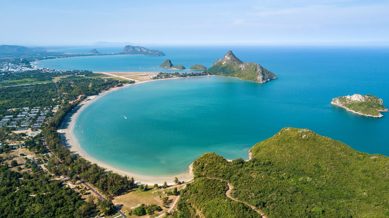

แหล่งท่องเที่ยวในเมืองประจวบคีรีขันธ์
เที่ยวชมธรรมชาติ ทะเล ภูเขา และสถานที่สำคัญของเมืองประจวบคีรีขันธ์

1. เขาช่องกระจก
จุดชมวิวที่สามารถมองเห็นทิวทัศน์ของเมืองประจวบคีรีขันธ์ ทะเล และภูเขาได้อย่างสวยงาม

2. อ่าวมะนาว
ชายหาดบรรยากาศสงบ เหมาะสำหรับพักผ่อน เดินเล่นริมทะเล และชมธรรมชาติ

3. สะพานสราญวิถี
สะพานริมทะเลที่เหมาะสำหรับเดินชมวิว รับลมทะเล และถ่ายภาพบรรยากาศเมืองประจวบฯ